When working collaboratively and using source control conflicts are something that are inevitable. Conflicts usually occur when someone is attempting a commit and have altered or removed a file that someone else is using.
There are different ways that conflicts can be handled, and this decision is usually made within a project team. You could always put the responsibility of resolving the conflict on the person who is completing the pull request, solve conflicts as a team or have a supervisor that checks and solves them for you. All these approaches have their merits and it’s up to you as a team to decide what’s best for you.
In order to practice solving a conflict, we first must make one!
Using GitHub desktop create a new repository and call it GitHubConflicts.
Add a text file of your choosing to the repository and commit it to GitHub.
Then create a new branch within GitHub desktop named “Conflict Branch” and make changes to the text file that you previously created, then publish that branch to GitHub.
Create another branch named “Conflict Branch 2” (based on the main branch!) and do the same again.
By the time you have finished you should have a GitHub repository that contains a text file, and two branches that have made different changes to that same text file.
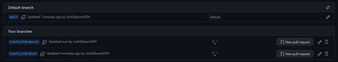Create a pull request for ConflictBranch and you will see that it will automatically be able to merge. This is because it is only making changes to the base repository, and as far as GitHub is concerned it is only making changes to the main repository, and no-one has told it yet that they have made changes themselves.
Complete the merge and then open a pull request for ConflictBranch2 and you will notice that the GitHub UI changes from before and GitHub notifies you to say that the branches can’t automatically be merged.
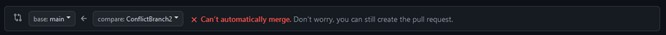This is because GitHub has noticed that if this branch it merged it conflicts with ConflictBranch and may remove some changes that were made.
Create the pull request as normal and GitHub will redirect you to the pull request window and inform you that the current pull request cannot be merged until the conflicts have been resolved.
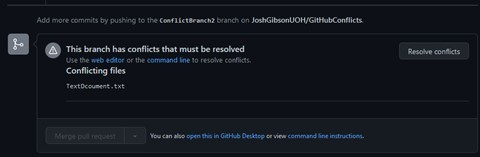Click the resolve conflicts button and GitHub will redirect you to their conflict resolution UI.
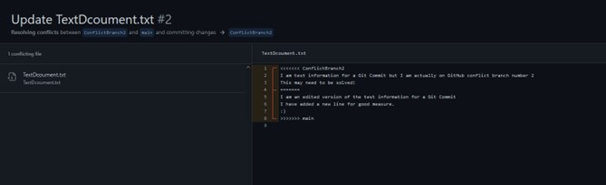They may seem a bit confusing at first, but it is simpler than it looks! Anything that is covered by a red boundary:
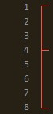Is the full area of a conflict.
Sections from branches that are attempting to merge into another are represented with arrows pointing to the left followed by the name of the branch (<<<<<<< name of branch here).
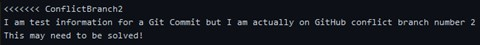Branches are then separated by a selection of equals signs (======) to help visually differentiate between the two.
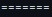Finally, the section of the branch that is being merged into is represented underneath, by arrows pointing to the right followed by the name of the branch (>>>>>>> name of branch here).
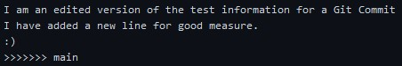How you solve the conflict is completely up to you, and whatever you choose to include will be what ends up in your main repo. You could choose to remove one line of code for another as you think one may be more useful or you may include them both.
You can do this by using the online editor provided by GitHub, delete and add move lines (or leave them as they are if you are fine with their current form) until you feel like you are happy with the result. Then remove the information that denotes the individual branches and the equals signs.
For the purpose of this example, I am going to take the information from ConflictBranch2 and place it directly under the information from the first branch.
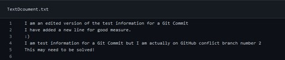As I have made my changes and removed the labels for the individual branches the “Mark as resolved” button at the top right-hand side of the screen is no longer greyed out.
Press this button to tell GitHub you have resolved the conflicts and the UI will update to let you know that all conflicts have been resolved and you can complete your merge.
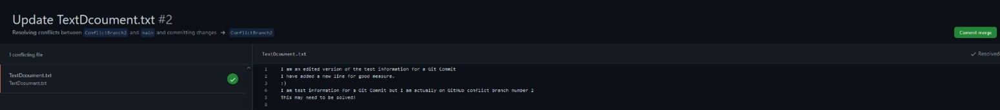Press the” Commit Merge” button on the top right-hand side of the screen to commit your merge and you will be redirected back to the pull request window where you can complete your pull request as normal.
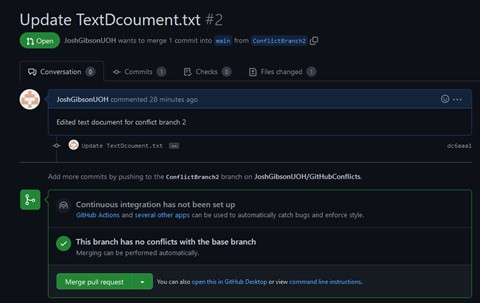Finally, we need to check our conflict was edited correctly, and the document within our main branch now reflects what we wanted it to.
Navigate back to GitHub desktop and update your local repository by selecting fetch origin with the main branch selected. This will update our local version of the repository with the one that is currently available on GitHub.
After you have done this open the repository in explorer either through GitHub desktop or by locating it yourself.
Open the text document that you successfully merged, and it should now represent the changes you made on GitHub.
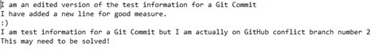In a programming environment classes assets and other files would work the same way.
If this has worked successfully, congratulations you have just solved your first merge conflict! This is something that you will come across often in your programming career, and if you make a mistake when merging, do not worry! One of the benefits of GitHub is that we can revert our changes if something goes wrong.